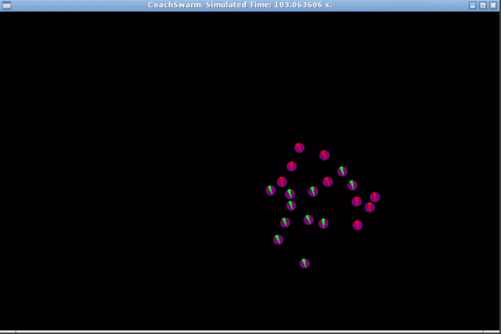
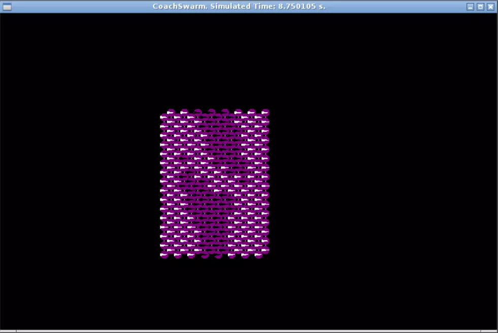
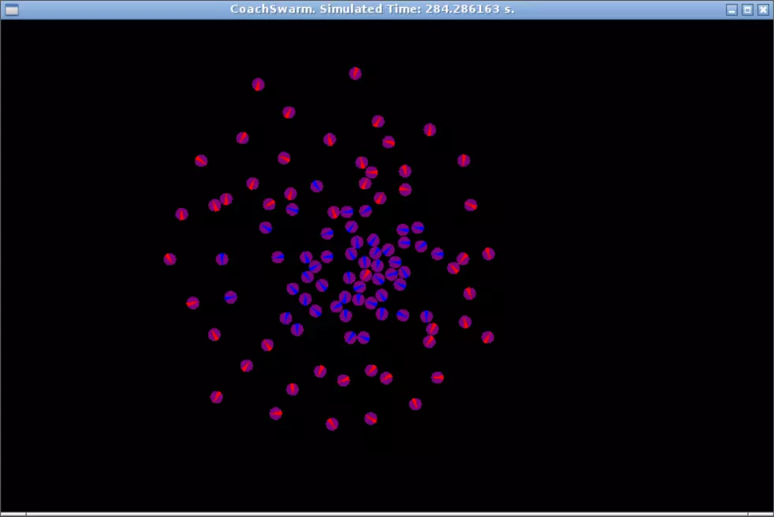

Copyright © 2023 Bill Yen.
All Rights Reserved.
Swarm Robotics Projects
Decentralized Robot Controllers for Complex Group Behaviors
About:
I built three decentralized robot controllers as a part of Northwestern University’s Swarms and Multi-Robot Systems (MECH_ENG 409) course to learn more about the state of the art research that addresses the challenges of controlling large groups of robots. These controllers were implemented using Python, and they ran on a simulated robotic swarm modeled after the Coachbot. The simulation ran in a virtual Linux environment via Docker. Through working on these projects, I gained hands-on experience with systems design, swarm robotics, and nature-inspired algorithms.  
Ad Hoc Localization Network
For this project, I generated an global coordinate system by having a number of static robots communicate with their neighbors. I then smoothed this coordinate using an approximation method from Ragpal et. al 1, and had certain robots turn on their onboard LED based on their position in this coordinate system to form the Northwestern N. This method requires no global communication or sensor to create the coordinate. It works by having two arbitrary seed robots send out "hop counts" and incrementing these hop counts through the rest of the swarm. As a result, it is fully decentralized and scalable to much larger swarms.
Sort Robots With Brazil Nut Effect
This project explores the idea of using the Brazil nut effect, a type of granular segregation, to group robots without direct communication between them 2. My algorithm assigns a virtual diameter to each robot and made the center of the map the direction of gravity, which resulted in the robots with the smallest radii (blue robots) to naturally end up in the center. By tuning the virtual sizes of the robots and the weights of their attraction and repellent vectors, many groups of robots can be sorted into semi-concentric circles.
Reynolds Flocking in Robotic Swarm
I implemented a flocking behavior described by Craig W. Reynolds to make a group of 20 robots travel together like a flock of birds. This requires the robots to communicate to each other directly and constantly calculate their relative headings and distances in order to compute their alignment, cohesion, separation, and migration vectors 3. This form of travel is robust to failures in individual robots because as long as most of the swarm is facing the right way, the malfunctioning robot will be able to self-correct back to the same direction as its peers due to the alignment vector's effect.
References:
- Organizing a Global Coordinate System from Local Information on an Ad Hoc Sensor Network
- Segregation in swarms of mobile robots based on the Brazil nut effect
- Reynolds flocking in reality with fixed-wing robots: communication range vs. maximum turning rate